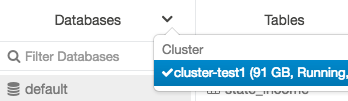
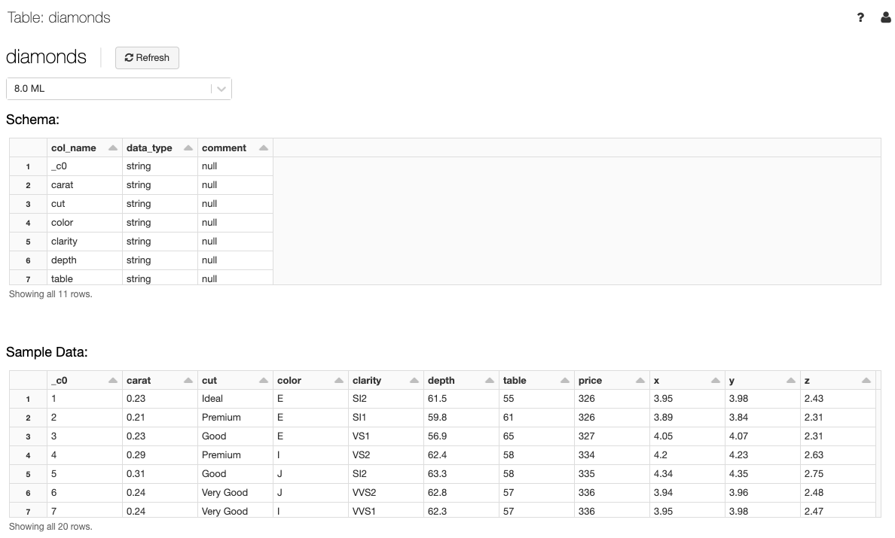

Explore and create tables in DBFS
Important
This documentation has been retired and might not be updated. The products, services, or technologies mentioned in this content are no longer supported. See Load data using the add data UI, Create or modify a table using file upload, and What is Catalog Explorer?.
Access the legacy DBFS file upload and table creation UI through the add data UI. Click  New > Data > DBFS.
New > Data > DBFS.
You can also access the UI from notebooks by clicking File > Add data.
Databricks recommends using Catalog Explorer for an improved experience for viewing data objects and managing ACLs and the Create or modify table from file upload page to easily ingest small files into Delta Lake.
Note
Availability of some elements described in this article varies based on workspace configurations. Contact your workspace administrator or Databricks account team.
Import data
If you have small data files on your local machine that you want to analyze with Databricks, you can import them to DBFS using the UI.
Note
Workspace admins can disable this feature. For more information, see Manage data upload.
Files imported to DBFS using these methods are stored in FileStore.
Create a table
You can launch the DBFS create table UI either by clicking  New in the sidebar or the DBFS button in the add data UI. You can populate a table from files in DBFS or upload files.
New in the sidebar or the DBFS button in the add data UI. You can populate a table from files in DBFS or upload files.
With the UI, you can only create external tables.
Choose a data source and follow the steps in the corresponding section to configure the table.
If a Databricks workspace administrator has disabled the Upload File option, you do not have the option to upload files; you can create tables using one of the other data sources.
Instructions for Upload File
Drag files to the Files dropzone or click the dropzone to browse and choose files. After upload, a path displays for each file. The path will be something like
/FileStore/tables/<filename>-<integer>.<file-type>. You can use this path in a notebook to read data.Click Create Table with UI.
In the Cluster drop-down, choose a cluster.
Instructions for DBFS
Select a file.
Click Create Table with UI.
In the Cluster drop-down, choose a cluster.
Click Preview Table to view the table.
In the Table Name field, optionally override the default table name. A table name can contain only lowercase alphanumeric characters and underscores and must start with a lowercase letter or underscore.
In the Create in Database field, optionally override the selected
defaultdatabase.In the File Type field, optionally override the inferred file type.
If the file type is CSV:
In the Column Delimiter field, select whether to override the inferred delimiter.
Indicate whether to use the first row as the column titles.
Indicate whether to infer the schema.
If the file type is JSON, indicate whether the file is multi-line.
Click Create Table.
View databases and tables
Note
Workspaces with Catalog Explorer enabled do not have access to the legacy behavior described below.
Click  Catalog in the sidebar. Databricks selects a running cluster to which you have access. The Databases folder displays the list of databases with the
Catalog in the sidebar. Databricks selects a running cluster to which you have access. The Databases folder displays the list of databases with the default database selected. The Tables folder displays the list of tables in the default database.
You can change the cluster from the Databases menu, create table UI, or view table UI. For example, from the Databases menu:
Click the
 down arrow at the top of the Databases folder.
down arrow at the top of the Databases folder.Select a cluster.

View table details
The table details view shows the table schema and sample data.
Click
 Catalog in the sidebar.
Catalog in the sidebar.In the Databases folder, click a database.
In the Tables folder, click the table name.
In the Cluster drop-down, optionally select another cluster to render the table preview.
Note
To display the table preview, a Spark SQL query runs on the cluster selected in the Cluster drop-down. If the cluster already has a workload running on it, the table preview may take longer to load.